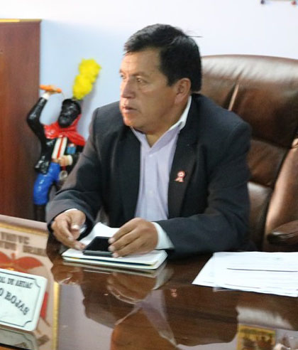

Alcalde

Ciro Samaniego Rojas
Alcalde Como Alcalde me comprometo a ser un gran líder, un gran dirigente. Actuando como tal y reuniendo las virtudes y cualidades para velar por el progreso de
la comunidad y su gente.
Como Alcalde me comprometo a ser un gran líder, un gran dirigente. Actuando como tal y reuniendo las virtudes y cualidades para velar por el progreso de
la comunidad y su gente.